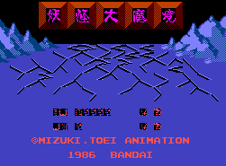
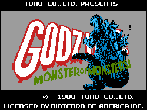

![[Doraemon]](../images/NES/dore_nes.gif)
Controls
- A button: Enter Door/Drop into Manhole/Jump
- B button: Shoot
- Start: Pause
- Select: [not used]
The game has you running around avoiding enemies, but I don't know what
the purpose of the game is. You occasionally find doors that teleport you
to different parts of the playing field.

Controls
- A button: Jump
- B button: Shoot
- Start: Pause
- Select: [not used]
Gegege no Kitarou is an anime aimed for kids based on traditional Japanese
monsters, ghosts, and spirits. It is a horizontal-scrolling platform game.
It was released in the US under the name Ninja Kid with many changes
including character graphics.

Controls
- A button: Select Monster/Punch
- B button: Unselect Monster/Kick
- Start: Shoot
- Select: Pause
This is a combination war strategy game and scrolling shooter. You control
Godzilla and Mothra as they move around a grid to gain position on the advancing
enemies. Moving from square to square can cause you to enter a scrolling
shooting stage where you must destroy the enemy guns, ships, and other
objects.
![[Godzilla 2]](../images/NES/gzil2nes.gif) This is a war strategy game where you control the military. The military
must stop Godzilla and other creatures from destroying the city.
This is a war strategy game where you control the military. The military
must stop Godzilla and other creatures from destroying the city.
Controls
- A button: Attack/Shoot
- B button: Jump
- Start: Pause
- Select: [not used]
It is your standard horizontal scrolling game with basically two types of game
play. In one type, you are walking around talking to agents to locate the evil
"Condor". Along the way, enemy agents pop up and attack you. You start out
with a kick as your only weapon, but you get a gun after defeating the first
enemy agent you encounter. The second type is a shooting gallery type view.
Various enemy agents pop up, and you must aim your sniper's sight at them to
kill them.
Controls
- A button: Punch
- B button: Kick
- Start: Pause
- Select: [not used]
This is a horizontal-scrolling fighting game. You control Ken(?) as he punches
and kicks his way through hordes of enemies. I am fairly sure this is a
glitch caused by NESA, but you can never die (I have just stood there for
10 minutes letting the enemies shoot and hit me). Overall, the game is
weak (especially the ending), but it is one of the few NES games I know of that
show people exploding.
To proceed to the next level, keep walking left until you find a doorway
with a little girl standing in it (she will appear and then disappear).
At this doorway, press A+B+Up. Keep doing this until you find the level boss.
-- from Drew Webber
![[Hokuto no Ken 2]](../images/NES/fotns2.gif)
Controls
- A button: Punch
- B button: Kick
- Start: Pause
- Select: [not used]
This is basically the same game as the first one except the graphics are a lot
sharper. It is not a spectacular game, but it is one of the few Nintendo games
where you get to see people explode.
![[Kinikuman: Muscle Tag Match]](../images/NES/kini_nes.gif)
Controls
- A button: Punch
- B button: Jump
- Start: Pause
- Select: [not used]
This is a wrestling game. NESA does not run this game well. It chops up the
screen funny, but the game is still playable. Kinikuman was released in
the US as Muscles. Beyond that, I do not know much about this anime.
![[Kyatto Ninden Teyandee]](../images/NES/kyatto.gif)
Controls
- A button: Jump
- B button: Attack
- Start: Pause
- Select: [not used]
This is a Mario-style platform game. The characters should be familiar to you; the anime is know as Samurai Pizza Cats
in the US. Pressing Start will pause the game and let you choose which of the three characters you want to play
as. Special weapons can be picked up along the way; to use them, press Up + A. Tapping the directional pad
twice and then holding it will make you run.
![[Mafat Conspiracy]](../images/NES/mafat.gif)
Controls
- A button: Jump
- B button: Attack
- Start: Pause
- Select: [not used]
Standard horizontal scrolling platform game where you guide Duke Togo as he kicks his way through the enemies to
save the world.
![[Outlanders]](../images/NES/outland.gif) This is a Zelda-style RPG. Beyond that, I don't know much about this game or
the anime.
This is a Zelda-style RPG. Beyond that, I don't know much about this game or
the anime.
Controls
- A button: ???
- B button: ???
- Start: ???
- Select: ???
This game is based on the anime starring Toei's mascot Perrault (named after the author of Puss 'n' Boots). This
game is based very closely on the Puss 'n' Boots movie Around the World in 80 Days where you must
make it around the world to win a bet using all different forms of transportation while avoiding cat guild asassins (they
want to kill Perrault because he has mice for friends). Fun game with lots of variety. -- from Doug Cranston
![[Super Dimensional Fortress Macross]](../images/NES/macr_nes.gif)
Controls
- A button: Change Valkyrie Form
- B button: Fire Gun
- Start: Pause
- Select: Fire Missles
This is a standard horizontal-scrolling shooter. You pilot your Valkyrie as
you blast countless swarms of enemy ships. It has decent graphics and
gameplay, but it is not an outstanding game. To change the form of your
Valkyrie, press the A button + up/left/right.
![[Transformers: Convoy's Mystery]](../images/NES/transformers.gif)
Controls
- A button: ???
- B button: ???
- Start: ???
- Select: ???
This game is a side-scrolling action game where you control Optimus Prime and take on the Decepticons by yourself.
It is very unfair because you have a weak weapon, can only take one hit, and have no continues. -- from Doug Cranston
Controls
- A button: Jump
- B button: Shoot
- Start: Pause
- Select: [not used]
This is a horizontal-scrolling platform game. You have to guide Lum to her
wedding with Ataru. You start at Infant School, move on to Elementary School,
then Junior High School, High School, the Studio and finally the Chapel. Lum
grows along the way, until she becomes the woman we know. In the last stage,
the Chapel, Lum will be wearing a weddingdress. This stage is different from
the others, because you can't fire electricity, and you can't duck! You have to
collect wedding-items (flowers, rings, necklaces etc.) while dodging enemies.
When you succeed, Lum and Ataru will get married and the game will start over
again. -- from Patriek Lesparre (list below as well)
Items Found when Jumping at Certain Places
- Jariten comes to help you; he flies above you shooting fireballs at the
enemies.
- You become Rei and all enemies turn into fish that you can eat (extra
points!). You need to be in this state in the later levels to reach the roof!
- Bonus Game: big Cherry-heads fly around the screen and you get
bonus points for shooting them. You can really fly as well!
- Teleports: you will be teleported to another place on the same floor.
- Switches: to switch on moving platforms.
- A red dress works like a shield, protecting you against a limited number
of hits.
© 1997 - Luis A. Cruz